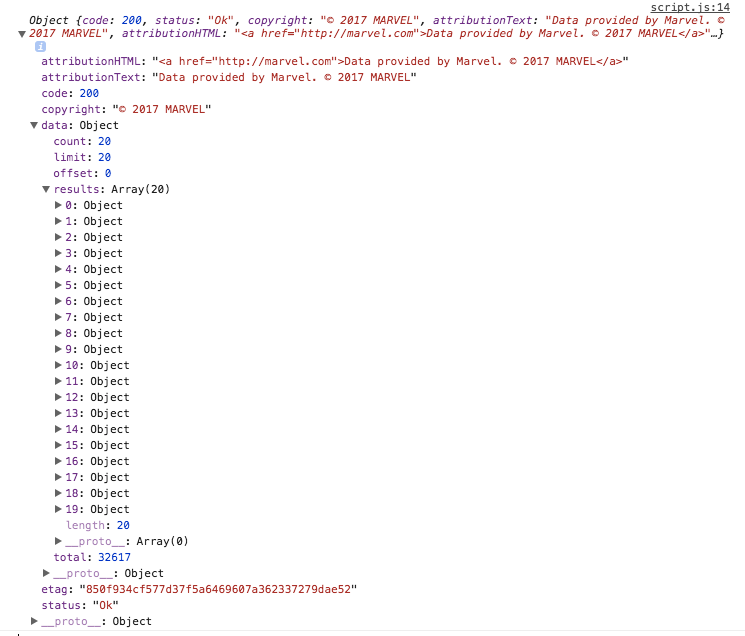

Its important to note that the call we made in the previous page wont actually return anything as we did not use our API key.
Let's modify it so that we'll get an actual response:
Notice now we are using our public key (For the purpose of this guide, we are displaying our key. In reality never do this!) and we
have appended it to the endpoint. This will give us a result like this:

The result from calling the API will be in JSON format, but here we've parsed it into a JavaScript object. The comics endpoint returns all the comics
in Marvel's library. If I had included the full result, we would have had to scroll down for ages to get to the bottom.
Besides the Comics endpoint, Marvel offers five other resource types using the API. They are:
Each of these resources have the same base endpoint: https://gateway.marvel.com/v1/public/. For the rest of this guide, we will focus on the Characters resource.
We still haven't done anything with this API. So, let's change that. Let's look up a hero.
Here's the format of the URL we can build to look one up: https://gateway.marvel.com/v1/public/characters?name=hero-name&apikey=publicKey
Once we receive the response, here is how we can access their bio (if they have one): response.data.results["0"].description;
Let's try it out! Look up Spider-man: